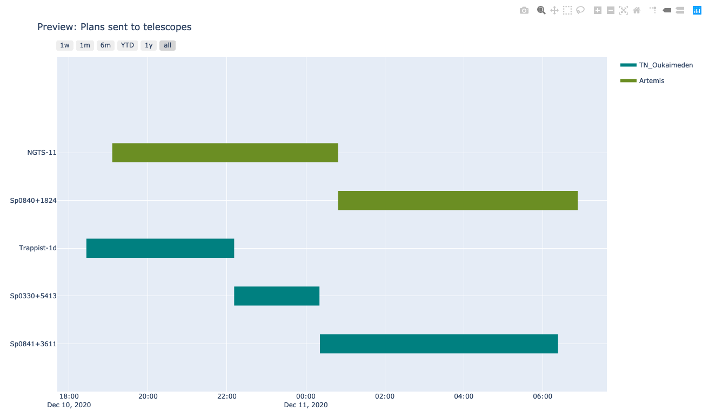

Plot with SPOCK
1- Phase plot
1.1 Effective coverage
Here we present a function to plot the phase coverage of a given target on a range of periods. The user will have to give:
Th target name, ex:
target = 'Sp1245-5721'Lower boundary of the period range,
pmin = 0.1upper boundary of the period range,
pmax = 3.1
Note: It can happen hat SPOCK does not find light curve for a target so the coverage appears nul when it’s not. This bug will be solved shortly.
[1]:
import SPOCK.plots_scheduler as SPOCKplot
SPOCKplot.phase_coverage_given_target(target='Nemesis-3.01',pmin=0,pmax=3.1)
INFO: Please add password.csv file in: /Users/elsaducrot/elsenv/lib/python3.7/site-packages/SPOCK-0.0.1-py3.7.egg/SPOCK/credentials/
INFO: OK Password file exists
INFO: Downloading target list from STARGATE.
WARNING: IERSStaleWarning: leap-second file is expired. [astropy.utils.iers.iers]
INFO: Downloading LC of Nemesis-3.01 33632 on Ganymede the 20210511
ERROR: Can not download LC of Nemesis-3.01 33632 on Ganymede the 20210511
INFO: Downloading LC of Nemesis-3.01 33632 on Ganymede the 20210627
INFO: Downloading LC of Nemesis-3 33632 on Io the 20210917
INFO: Downloading LC of Nemesis-3 33632 on Io the 20210918
INFO: Downloading LC of Nemesis-3 33632 on Io the 20210921
INFO: Downloading LC of Nemesis-3 33632 on Ganymede the 20211021
INFO: Downloading LC of Nemesis-3 33632 on Ganymede the 20211022
INFO: Downloading LC of Nemesis-3 33632 on Ganymede the 20211023
INFO: Downloading LC of Nemesis-3 33632 on Ganymede the 20211024
WARNING: If you feel the coverage is not consistent with the number of hours observed check if the exposuretime has been changed along the observations.
1.2 Annulus phase plot
First let’s download all lighgt curve for a given target and plot all LCs obtained by the pipeline.
[2]:
import SPOCK.plots_scheduler as SPOCKplot
import matplotlib.pyplot as plt
t, diff_flux, exposures, dates, target_name, times = SPOCKplot.get_all_LCS(
gaia_id_target = '4920061410401733632')
plt.plot(t,diff_flux,'.',)
plt.ylim(0.98,1.02)
INFO: Downloading LC of Nemesis-3.01 33632 on Ganymede the 20210511
ERROR: Can not download LC of Nemesis-3.01 33632 on Ganymede the 20210511
INFO: Downloading LC of Nemesis-3.01 33632 on Ganymede the 20210627
INFO: Downloading LC of Nemesis-3 33632 on Io the 20210917
INFO: Downloading LC of Nemesis-3 33632 on Io the 20210918
INFO: Downloading LC of Nemesis-3 33632 on Io the 20210921
INFO: Downloading LC of Nemesis-3 33632 on Ganymede the 20211021
INFO: Downloading LC of Nemesis-3 33632 on Ganymede the 20211022
INFO: Downloading LC of Nemesis-3 33632 on Ganymede the 20211023
INFO: Downloading LC of Nemesis-3 33632 on Ganymede the 20211024
[2]:
(0.98, 1.02)
Now, let’s fix the reference timing and period of an hypothetical planet and plot a vizualisation plot of the coverage of this period with the current observations.
[3]:
t0 = 2459512.791
period = 5.2109213
SPOCKplot.plot_annulus_phase_covered(times=times, period=period, target_name=target_name,t0=t0)
/Users/elsaducrot/elsenv/lib/python3.7/site-packages/SPOCK-0.0.1-py3.7.egg/SPOCK/plots_scheduler.py:768: VisibleDeprecationWarning:
Creating an ndarray from ragged nested sequences (which is a list-or-tuple of lists-or-tuples-or ndarrays with different lengths or shapes) is deprecated. If you meant to do this, you must specify 'dtype=object' when creating the ndarray.
Finally, you can plot the phase folded LC for a given period to see if a transit shape actually stands out
[4]:
SPOCKplot.phase_folded_LC(t,diff_flux,period,t0,x_lim_phase=0.02)
2- Visibility plot
In a similar way as visibility plot websites, SPOCK gives the option to plot the visibility of a target over night from all SPECULOOS observatories. The user simply has to enter:
The name of the site, ex:
name_observatory = 'SSO'The date of the night (start set at 3p.m by default to avoid confusion between sites), ex:
day = Time('2020-10-12 15:00:00')Target name, ex:
target = 'Sp0439-3235'
Note that this plot does not specify the distance to the moon yet.
[5]:
import SPOCK.plots_scheduler as SPOCKplot
from astropy.time import Time
#SPOCKplot.airmass_altitude_plot_given_target(name_observatory='SSO',day=Time('2020-12-10 15:00:00'),
# target='Sp0000-1245')
SPOCKplot.airmass_altitude_plot_given_target(name_observatory="SSO",\
day=Time('2020-12-10 15:00:00'),\
target='Sp0000-1245')

3- Gant chart of night_blocks
SPOCKplot gives the possibility to draw a gant chart of all observations on your local database scheduled with SPOCK or on a give date range. The plot will be automatic open in another window and is interactive. When passing on a block night_blocks start time, filter and exposure time will be displayed.
All night_blocks ever produced
With gantt_chart_all() the user plots the night blocks from the whole local databse (can take up to 30-40 seconds).
[6]:
import SPOCK.plots_scheduler as SPOCKplot
SPOCKplot.gantt_chart_all()
night_blocks on a specific date range
In this case the user must specify date_start and date_end in addition to a list of SPECULOOS telescopes.
[7]:
from astropy.time import Time
import SPOCK.plots_scheduler as SPOCKplot
day = Time('2020-12-10')
SPOCKplot.gantt_chart(date_start=day,date_end=day+1,telescope=['Artemis','Io'])
